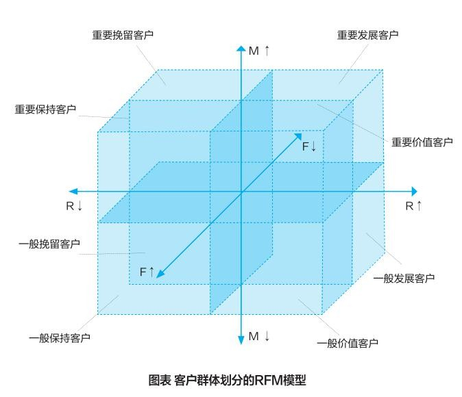
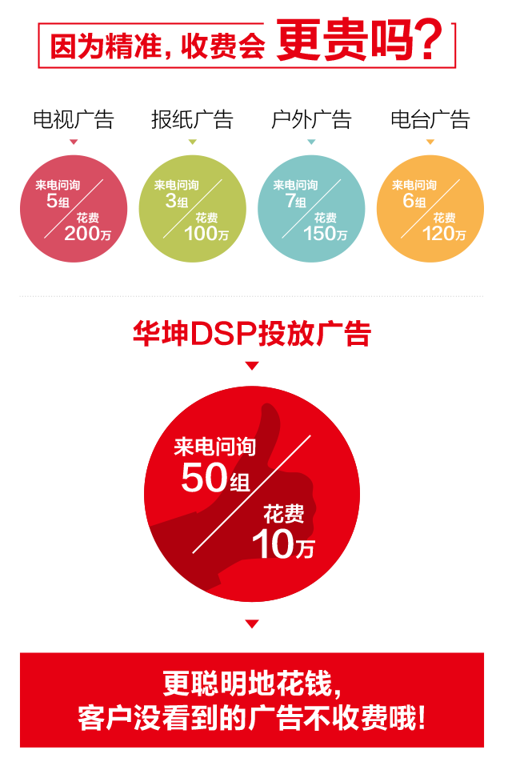

大数据在企业中的六种典型应用
2016-06-12,10:35
马云在一次演讲中说道：“人类正在从IT时代走向DT时代。”DT是数据处理技术（Data Technology）的英文缩写，大数据在各领域的广泛应用正在不断掀起热潮。云瑞兆信作为国内大数据营销领导者，专注于大数据在全产业链垂直领域的应用。
在DT时代，企业将是完全以数据分析驱动的企业，利用大数据分析，能够转化成洞察的能力，充分释放企业潜能，实现转型与进化。本文将列举个性化营销、对客户价值的识别和挖掘、客户流失预警、精准广告、企业商业决策、库存管理和物流配送等大数据在企业中的六种典型应用。
1、个性化营销
伴随着数据大爆炸与消费者个性化，用户对无关信息的容忍度与日俱减的同时，用户兴趣数据与日俱增。没有数据支撑的营销，将会陷入拍脑门而无效果的境地。这一切，导致了个性化成为大数据的应用方向。以云瑞兆信的大数据平台为例，通过用户行为数据分析，能够实现广告个性化定制，真正做到投其所好，充分捕获注意力。
2、对客户价值的识别和挖掘
以数据为支撑的客户价值评估将有助于公司找到真正的目标客户群，帮助企业更好地推进客户关系管理。云瑞兆信自建垂直行业数据库，拥有完善的用户标签，能够生成真实立体的用户画像，分析、筛选、抓取优质潜在客户，建立更有价值的细分客群数据系统，进行有效的客户关系管理。

3、数据驱动的精准广告
大数据的出现，宣告了盲目营销的终结，数据驱动的精准广告时代来临。云瑞兆信的精准营销平台就是典型的例子。通过数据库的消费者画像，能让广告主全方位了解消费者。采用50多种定向技术，能够让广告精准地触达用户的手机、PC端。投放全程效果监控，循环优化投放方案，有效控制成本，达到超高费效比。

4、客户流失预警
在用户即资产的时代，客户流失预警对企业的战略制定有着重要意义，流失的是否是目标客户，哪一类型的客户，用户为什么会流失等等。云瑞兆信大数据能够跟踪用户行为轨迹，通过不同的算法，可以发现最终客户流失的特殊及其原因，最终帮助企业挽留用户。
5、企业商业决策
如前所述，企业的商业决策已经变得与数据密不可分。以苏宁为例，其数据部门需要为业务部门提供多重服务。首先是报表服务，为运营部门提供实时的、丰富的、准确的数据支持，其次是引擎服务，应用大数据的技术去驱动前台的业务，它已经直接嵌入到企业的生产经营活动中，直接影响到企业的整个业务。
6、库存管理和物流配送
对于电商或O2O公司来说，库存管理和物流配送是业重要的竞争力。通过数据的分析和挖掘，可以精准测算出不同品类商品的库存水平，同时获取最佳用户体验与物流整体配送效益的平衡。
比如在京东商场，当用户点击浏览某商品后，京东会通过对该用户的一系列数据分析，确定其购买的可能性。当该用户被确定为潜在用户后，京东便会将其浏览过的产品，在当地仓库中准备好，一旦用户下单，便可迅速配货，这就是为啥你常能够次日便收到货品。
中国是全球最重要的大数据应用市场，大数据有望引领下一轮经济增长浪潮，未来公司之间的竞争将是对于数据资源和应用的竞争。云瑞兆信深耕各垂直领域，为房产家居、汽车、金融、教育、品牌等等众多领域的客户提供全终端精准投放平台、互联网推广优化、数据挖掘、创意服务等整合营销解决方案，逐步构建起大数据价值应用的闭环生态链。
在未来，云瑞兆信这样的大数据应用型企业，站在大数据应用的高点上，必将成为DT时代的大赢家。